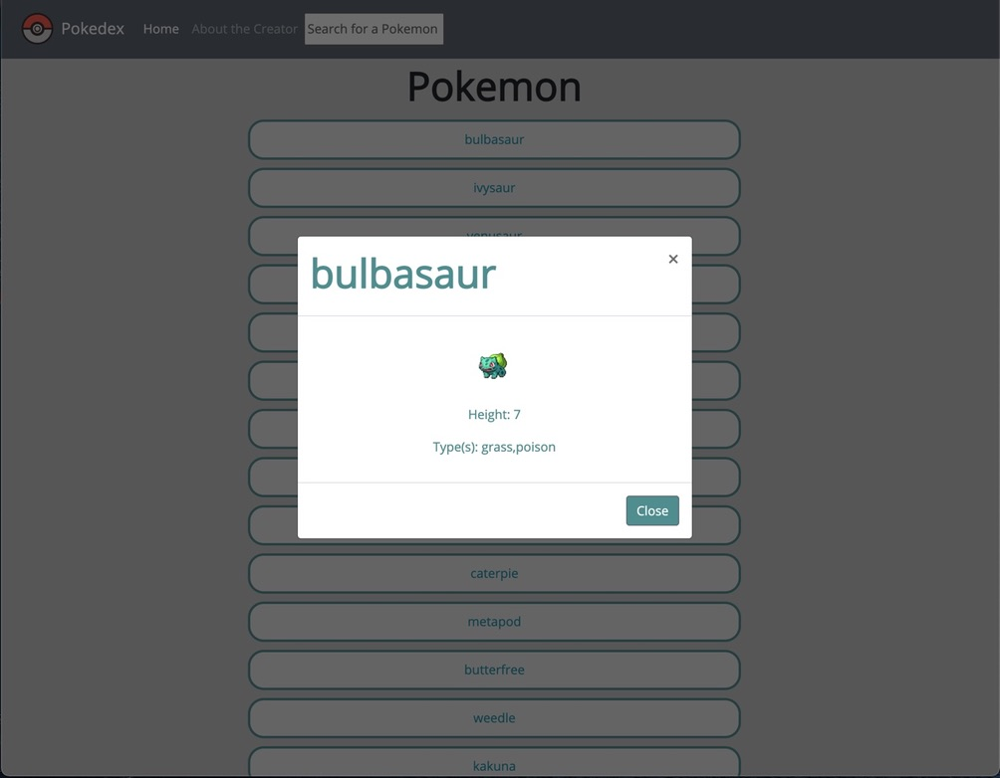
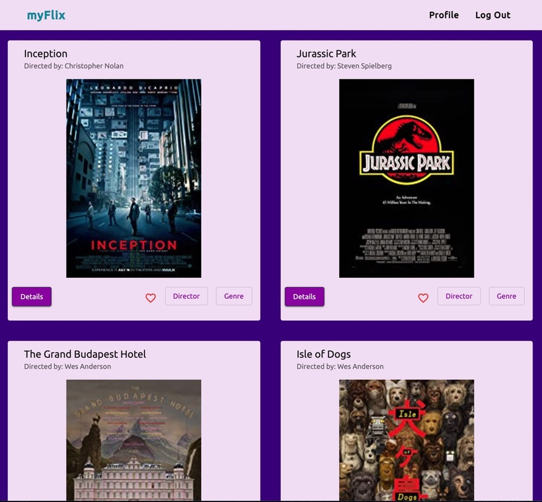

Pokedex App
This is a small web application that I built using HTML, CSS, and JavaScript. It loads data from an external API and allows users to learn about individual Pokemon in detail. Users may also search for a specific Pokemon using the search bar.
Try the app!See code on Github

myFlix App
I built the server-side component of a "movies" web application which will allow users to access information about different movies, directors, and genres. Users can also create and update their account and create a list of their favorite movies. My API is a Node.js and Express application and uses a REST architecture with URL endpoints detailed in my documentation. The movies database was built using MongoDB and information is provided in JSON format. My API has been tested in Postman and deployed to Heroku.
See code on Github for the server-side of my applicationSee code on Github for the client-side of my application built using React
See code on Github for the client-side of my application built using Angular
Try out the React App!
Try out the Angular App!

Chat App
This is a chat app for mobile devices built using React Native. The app provides users with a chat interface and options to share images and their location.
See code on Github
Meet App
The goal of this project was to build a serverless, progressive web
application (PWA) with React using a test-driven development (TDD)
technique. The application uses the Google Calendar API to fetch
upcoming events. I started this project by developing user stories
for each of the features I would be implementing in this app. I then
turned these into Given-When-Then statements that formed the basis
of my TDD approach. I really enjoyed continuing my experience with
React and also using serverless functions.
This app uses OAuth2 authentication. You will need to sign in to
a Google account to view the app.
See code on Github